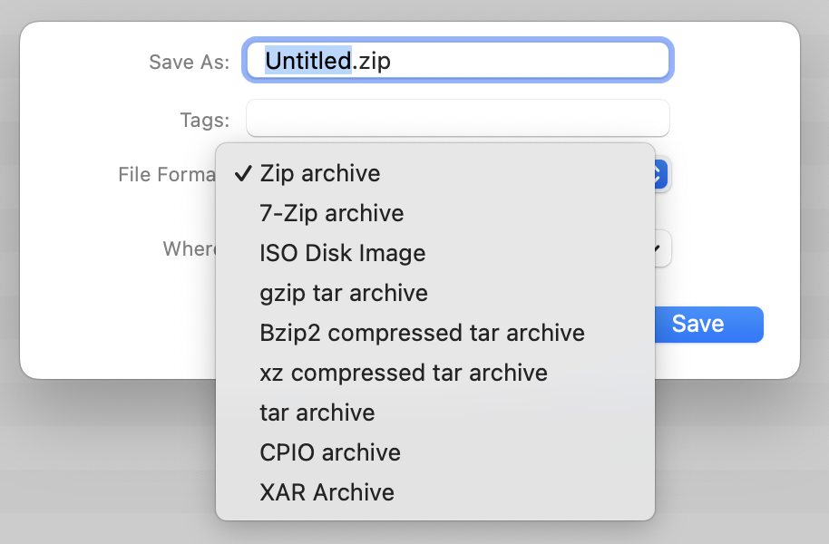

It is important to understand that Arkyve does not automatically save changes to archives while you are making them.
This is because compressed archives can be very large and saving them may take some considerable amount of time, therefore it is better for you to make the decision about when an archive is ready to be saved to disk.
To save your changes in an archive, choose the "Save" item from the File menu.
If the archive is new and has never existed on disk, you will then be presented with a file selector where you can specify the filename for the archive, and which of the supported formats to save it as.
If the archive existed already, the changes will be immediately written to it. Should you wish to save it in a different location, with a different name, or in a different format, use the "Save As" menu item instead.
Naming an archive
When you are choosing the filename of an archive, you should not include the file extension (e.g.
.zip) - this will be added automatically based on the archive format you choose.
Choosing a format
Clicking on the format dropdown menu will display a list of all of the formats that Arkyve can save. Select the format that best meets your needs.
The default format is Zip, but you may change this in Arkyve's settings.
